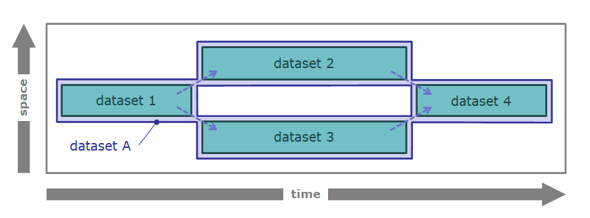

TtDT - Report - Building resilient dataset transformation transparency
Introduction
bCLEARer stage pipelines work at the level of datasets rather than dataset collections and so have a structure that offers substantially more opportunities for accounting. In this section the focus is on building transformation transparency for those datasets.
After a section setting the scene, the following topics are covered:
-
firstly, a general notion of algorithmic identity, from which difference and so transformation can be established, and
-
secondly, how to implement transparency in the individual bCLEARer stage pipelines through tracking, tracing and testing transformations.
The discussion of the second topic is divided into three sections:
-
mapping tracking of intended identities
-
mapping tracing of intended changing identities
-
testing tracking and tracing for actual executions
[]{#Bookmark58}
Setting the scene
The bCLEARer stage is designed as a sequence of bUnit [process ]{.inline-comment-marker ref="175eab42-9f32-43f8-adf1-1211df4514d7"}types -- the bUnit flow -- which may or may not be organised into sub-pipelines within the stage. It is important that this flow is not only transparent, open to inspection, but that the transparency is also resilient in the face of change.
A bUnit process type can be characterised as a type of process that consumes one or more (input) [dataset ]{.inline-comment-marker ref="1bffc318-09ce-4587-a91f-806063792ffc"}types and produces one or more new (output) [dataset ]{.inline-comment-marker ref="1469d260-110b-438e-8174-ac1eff4f87ea"}types. At this level, unlike the higher levels which work with dataset collections, dataset types are individuated, where each dataset type is picked out as separate. So process types have associated flow mappings -- mappings from the individual input dataset type and to the individual output dataset type.
The components of the bUnit flow, the bUnit process and dataset types, are identified using a name, typically reflecting its function, that is unique within the bUnit, which is often supplemented with a project-wide (code) identifier. When the bUnit dataset flow is run, the run is given an identifier. The datasets and processes in the run are identified by the combination of the type identifier and the run identifier.
In the context of bUnit flow, a dataset is a collection of data items in a common format -- where a data item is a single unit of data. A tabular row dataset -- a common type of dataset -- is a table where the data items are the rows (these rows have an internal structure/content stored in cells based upon the table\'s columns). Another common case is a tabular cell dataset where the data items are the table's cells themselves.
One can visualise the bUnit flow in a number of ways. Firstly, from the perspective of the process types -- see below.
[ {.confluence-embedded-image
.image-center width="442"
height="69"}]
{.confluence-embedded-image
.image-center width="442"
height="69"}]
Secondly from the perspective of process and dataset types, where the pipes are adorned with a dataset icon -- see below.
[ {.confluence-embedded-image
.image-center width="442"
height="90"}]
{.confluence-embedded-image
.image-center width="442"
height="90"}]
And finally from a pure dataset type perspective, a bUnit dataset flow, showing a sequence of datasets -- see below.
[ {.confluence-embedded-image
.image-center width="442"
height="89"}][]{#Bookmark59}
{.confluence-embedded-image
.image-center width="442"
height="89"}][]{#Bookmark59}
A general notion of algorithmic dataset identity
In the bCLEARer stage pipeline design process, one defines (and so, in this scheme of things, gives identity to) bUnit dataset types and their associated bUnit filter types. In the diagram below, 'dataset 1' and 'dataset 2\' are bUnit dataset types associated with bUnit filter type \'filter A'. These names help humans keep track of the identities for the bUnit datasets and process types. In the implementation there will be internal identifiers corresponding to these for the computer to use.
[ {.confluence-embedded-image
.image-center width="442"
height="90"}]
{.confluence-embedded-image
.image-center width="442"
height="90"}]
Filters are where transformations happen. From the perspective of datasets, we can be more specific and locate it as a property of the relation between a filter\'s input dataset and output dataset -- a filter-dataset flow. This is perhaps more easily visualised when the flow is seen from the dataset perspective, as in the diagram below.
[
So the starting point for inspecting dataset transformations is these filter-dataset flows. To make them more concrete we can list them in a table -- as done below.
bUnit process bUnit input bUnit output filter A dataset 1 dataset 2
To enable tracking and tracing of dataset transformations one firstly needs to identify the types of dataset identities that are to be tracked and traced. Then one can ask for their filter-dataset flows, showing where these identities are preserved.
The two core types of algorithmic dataset identity bCLEARer works with at the moment are:
-
dataset item identity
-
dataset item immutable stage identity
As these are all algorithmic identities, they can be tested automatically. bCLEARer implements these algorithms using [counts]{.inline-comment-marker ref="71b21519-489a-48cf-b05d-c6bda4d127a2"}, sums and hashes (which are described here: TtDT - Report - Appendix - bH - bHashing and bSumming{linked-resource-id="5768839184" linked-resource-version="4" linked-resource-type="page"}) and stores them as metadata on all the bUnit datasets. This makes it easy to test for unexpected differences.
These identities are described below.
Dataset item identity
The first type of algorithmic identity is dataset item identity. This is based upon immutability of the collected data items\' identities. In a bUnit filter where an input dataset type is intended to have a corresponding output dataset type that collects exactly the 'same' data items -- where sameness is based upon data item identity -- then they share dataset item identity. [The content of the data items may change -- for example, a column may be dropped -- but this does not affect the dataset identity]{.inline-comment-marker ref="468ba323-fa04-4fe1-bde1-d015643f9d2f"}. However, a merge or split of a dataset, where the collected data items change will not qualify for dataset item identity.
Reconsider the example above. Assume we intend that filter A preserves dataset item identity, then we could record the transformation characteristics to the filter-dataset flow as shown in the table below.
bUnit process bUnit input bUnit output identity filter A dataset 1 dataset 2 dataset item identity
Where a filter-dataset flow has this characteristic, when it is executed we test the identity. Where there is a difference, this is reported and should be investigated -- we discuss this further in the testing section below.
Of course, it is possible that there are multiple item identities that that dataset is tracking, but we only consider the case where there is one here.
Dataset item immutable stage identity
The second type of algorithmic identity is dataset item immutable stage identity -- this is based upon immutability of the collected data items\' content (including their identities). This follows a similar pattern to the identity described above.
In a bUnit filter, such as a pass-through, where an input dataset is intended to have a corresponding output dataset type that collects exactly the 'same' data items with their content unchanged -- then they share dataset item immutable stage identity. In this case, dropping a column from the dataset would change the contents, so they wouldn't share this identity. This can be regarded as a more stringent kind of dataset item identity -- as dataset item immutable stage identity implies d[ataset item identity.]
Reconsider again the filter A example. Assume we now intend filter A to preserve dataset item immutable stage identity, then we could record the transformation characteristics to the filter-dataset flow as shown in the table below.
bUnit process bUnit input bUnit output identity filter A dataset 1 dataset 2 dataset item immutable stage identity
Where a filter-dataset flow has this characteristic, when the pipeline is executed we test for this identity. Where there is a difference, this is reported and should be investigated -- we discuss this further in the testing section below. In practice, we will need to differentiate between cases where we expect the dataset and associated data items\' identity to always change and where they may change, but don't necessarily. in this exposition we gloss over this distinction.
Where a dataset is processed and the input and output versions both collect the 'same' data items with the same content, then they are the same dataset immutable stage. Where the content of a data item changes -- for example, a column is dropped -- this marks the end of the dataset immutable stage but does not affect the dataset identity.
The obvious candidate for stage identity based upon content immutability is the maximal content of the dataset. For example, in the case of tables, this would be all the data columns. There will be cases where the content naturally divides into sub-content and so can be usefully tracked in finer detail. However we only consider the case where there is a single (maximal) notion of content here.
Tracking intended dataset identities
In this context, tracking means following the intended flow of the two identities through the bUnit pipeline. In other words, for a particular dataset identity, which bUnit datasets (pipes) it is intended to pass through. This involves mapping where it is intended to be preserved across bUnit filters. We describe this in more detail in this section.
Tracking a simple pass-through
Consider first a simple pass-through pipeline visualised in the figure below.\

This gives rise to the filter-dataset transformation characteristics in the table below.
bUnit process bUnit input bUnit output identity level pass-through dataset 1 dataset 2 dataset item identity pass-through dataset 1 dataset 2 dataset item immutable stage identity
From this table we can infer that there is a dataset, of which dataset 1 and dataset 2 are bUnit filter stages -- dataset A. We can also infer that this dataset is its own immutable stage, as it is immutable throughout its life. [This means it has two names]{.inline-comment-marker ref="5540785e-031a-47dc-b3ca-8c95d2760652"}. We tend to use the shorter names in diagrams and have both in one of the tables for reference (here you can find both names in a later table). This structure can be visualised as a [tracking life history] -- as shown in the figure below.\

The tracking is recorded in the component structure. In this case, where the bUnit dataset is a stage in the life of the larger dataset. This structure can be recorded in a tracking table, such as the one below.
composite tracked component dataset A dataset 1 / dataset A bUnit stage dataset 1 dataset A dataset 2 / dataset A bUnit stage dataset 2
[The stage succession structure can also be recorded in a table]
before after type dataset 1 / dataset A bUnit stage dataset 1 dataset 2 / dataset A bUnit stage dataset 2 bUnit stage
Tracing intended dataset identities
In this context, tracing means identifying the intended flow of transformation based upon multiple tracked identities. This involves mapping where the bUnit filters intend a transformation. We describe this in more detail in this section.
Tracing simple dataset stage successions
It can be intended that a dataset remain immutable throughout its life. Or, it can be intended that datasets can change (be mutable). In the bCLEARer stage pipeline, the changes translate into a series of immutable stages. The tracing marks out the sequence of stages.
Consider the simple single filter pipeline in the figure below.\

Assume filter A preserves dataset identity, but transforms the content (in some way). This gives rise to the mapping table below.
bUnit process bUnit input bUnit output identity level filter A dataset 1 dataset 2 dataset item identity
From this one can infer the existence of dataset A and its two immutable stages that are identical with their corresponding bUnit datasets. We can record this in an existence table like that below.
Identity dataset component dataset W dataset 1 / dataset W immutable bUnit stage dataset 1 dataset W dataset 2 / dataset W immutable bUnit stage dataset 2
For tracing purposes, one also needs to identify the succession transformation. This can be inferred algorithmically from the previous tables. One can record them in an succession table like that below.
prior dataset stage post dataset stage bUnit process dataset W immutable bUnit stage dataset 1 dataset W immutable bUnit stage dataset 2 filter A
This trace can be shown visually in a life history.\

Tracing simple dataset successions
Consider a simple single filter pipeline whose bUnit filter is designed to take a dataset as input and output, based upon this, a different dataset. Then the dataset identity table is empty, as no identities are preserved. But there is an intended transformation, the emergence of a new dataset, that needs to be traced.
Reconsider the pipeline in the figure above. In this example, assume dataset 2 is a new dataset, different from dataset 1. In this simple case, the bUnit dataset flow links the two (distinct) bUnit datasets.
For tracing purposes one also needs to identify the dataset emergence transformation -- the links from the emerging dataset back to the dataset it is immediately dependent upon. This can be inferred algorithmically from the filter and recorded in an mapping table like that below.
prior dataset post dataset bUnit process dataset 1 dataset 2 filter A
This trace can be shown visually in a life history.\

Tracking and tracing branches
The bCLEARer stage pipeline flow can split-and-merge, which creates the possibility for the dataset identities to split and merge as well. Consider the pipeline in the figure below.\
[
Assume the filters (whatever they are) just preserve data item identity, so not immutable stage identity. This gives rise to the mapping table below.
bUnit process bUnit input bUnit output identity level filter X dataset 1 dataset 2 dataset item identity filter Y dataset 1 dataset 3 dataset item identity filter Z dataset 2 dataset 4 dataset item identity filter Z dataset 3 dataset 4 dataset item identity
The lack of dataset item immutable stage identity implies that there is a dataset item immutable stage difference. The dataset item identity implies the existence of a dataset persisting through the bUnit dataset flow -- dataset A -- of which the bUnit datasets are components -- as shown in the table below.
composite component dataset A dataset 1 / dataset A immutable bUnit stage dataset 1 dataset A dataset 2 / dataset A immutable bUnit stage dataset 2 dataset A dataset 3 / dataset A immutable bUnit stage dataset 3 dataset A dataset 4 / dataset A immutable bUnit stage dataset 4
The earlier mapping table [provide ]{.inline-comment-marker ref="889c8a95-14d3-4c32-ac95-1285b090613c"}the basis for immutable stage tracing relations between the bUnit datasets. The resulting life history below visualises the tracking -- using components, and tracing -- using arrows.
[
Or it can be recorded in a table, such as the one below.
composite tracked component dataset A dataset 1 / dataset A immutable bUnit stage 1 dataset A dataset 2 / dataset A immutable bUnit stage 2 dataset A dataset 3 / dataset A immutable bUnit stage 3 dataset A dataset 4 / dataset A immutable bUnit stage 4
There are successions between the bUnit dataset stages. These are identified and recorded as part of tracing[, which is the topic of the next section.]
Testing identity
Once the intended tracks and traces have been identified (as described in the two previous sections), they can be used when the pipeline is executed to test whether identity is being preserved as intended. The pipeline has been implemented so that every bUnit dataset has immutable metadata; a count, hashsums for item identity and immutable stage identity, and a hash for bUnit stage identity. Each bUnit filter has a corresponding inspection filter that has access to its dataset's metadata. This is shown graphically in the figure below.
[
The inspection filter uses the dataset metadata as the basis for testing, as described in the next sections.
Testing a simple pass through
Assume we have a simple pass-though filter as discussed earlier and shown in the figure below. As it is a pass through, dataset and immutable stage identity are preserved, as shown in the life history.
[
In the pipeline, the associated inspection process has access to the dataset metadata -- as shown in the figure below.
[
It uses the track and trace maps to test the transformations. In this case, all non-bUnit items of metadata should match (bUnit stage identities should never match).
Testing a simple column drop
Now assume we have a simple filter where the dataset has its content transformed -- by, for example, dropping a column or two. In this case, dataset identity is preserved, but immutable stage identity is not, as shown in the life history.
[
In the pipeline, the associated inspection filter has access to the dataset metadata -- as shown in the figure below.
[
It uses the track and trace mapping to test the transformations. In this case, only the first item of metadata (identity_hashsum) should match.
Testing a simple dataset split
Testing splits [(and merges - see below)]{.inline-comment-marker ref="60fd11a1-5f4a-46e8-83c2-292ad1e4776f"} requires a little more calculation than simple matching. Consider the split shown in the figure below. In this case, the sum of the two output items should match the input items.
[
Testing a simple dataset merge
[Consider the merge shown in the figure below. In this case, the input items should match the sum of the two output items.]
[ {.confluence-embedded-image
.image-center}]{.confluence-embedded-file-wrapper
.image-center-wrapper}[]{#Bookmark73}
{.confluence-embedded-image
.image-center}]{.confluence-embedded-file-wrapper
.image-center-wrapper}[]{#Bookmark73}
Expanding the testing
We have only covered a small range of the possible tests that can be done with bCLEARer stage pipelines. But hopefully this is enough to give a good idea of the kinds of test that are feasible.